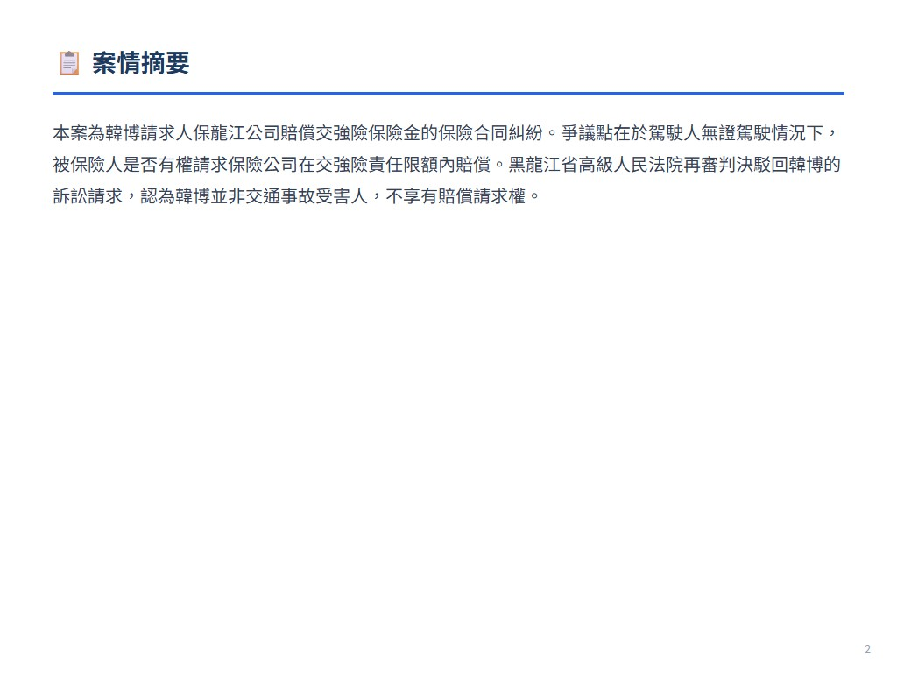
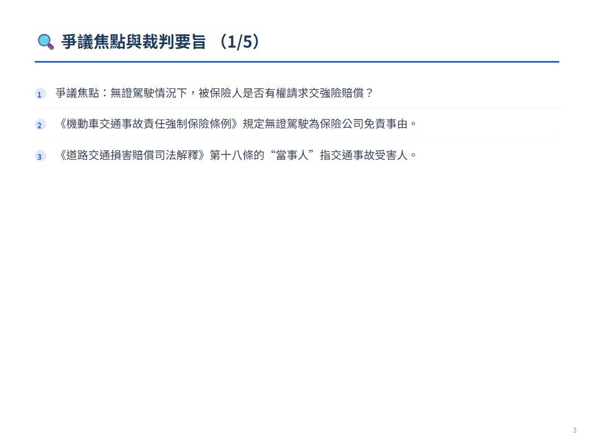
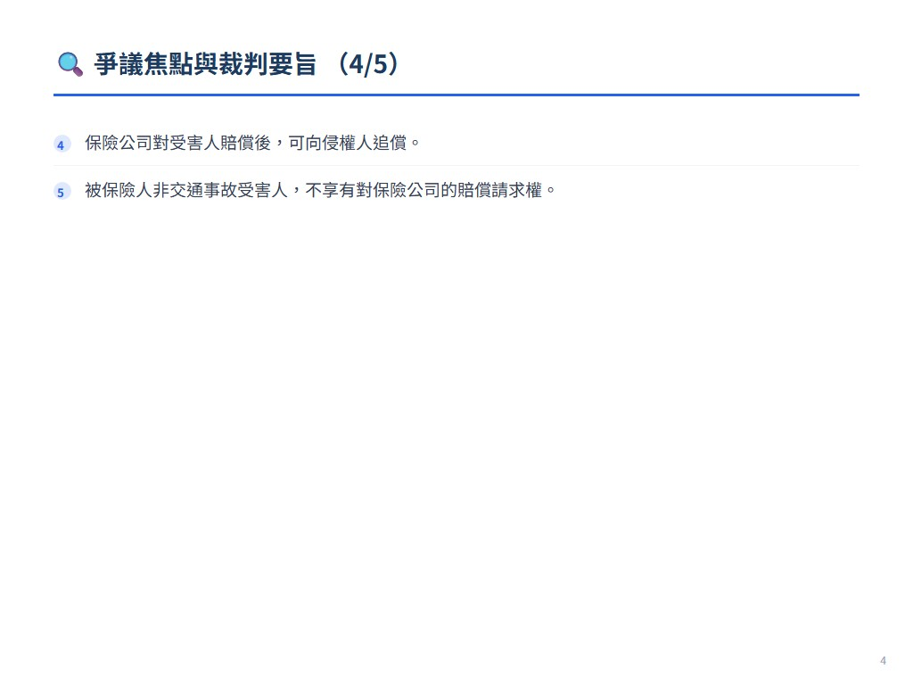
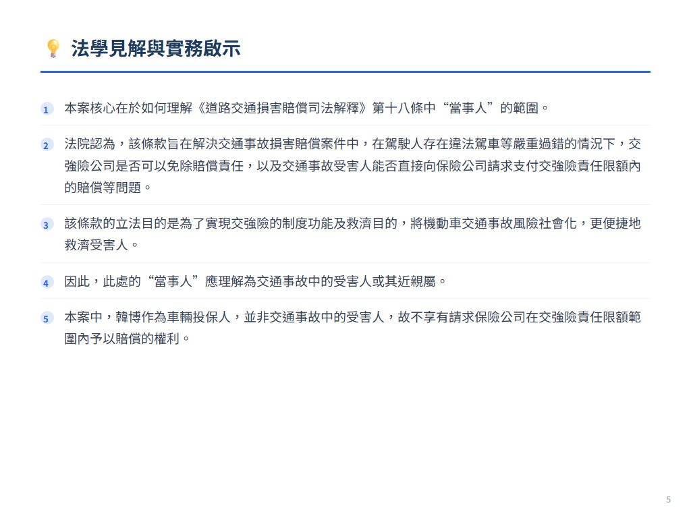
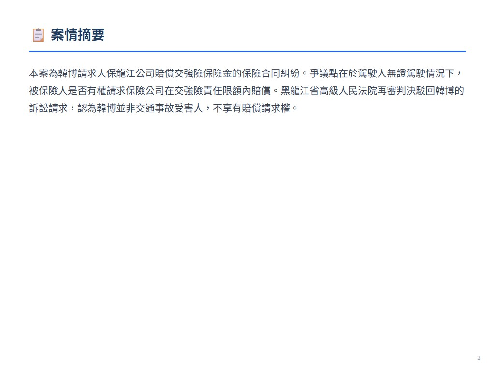
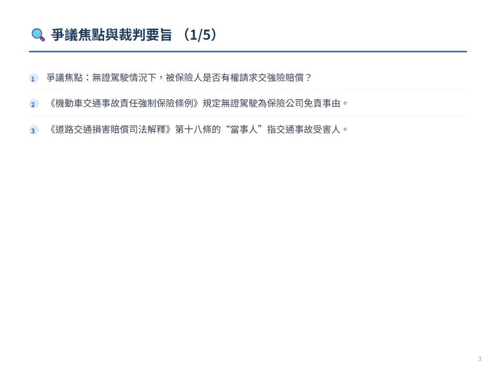
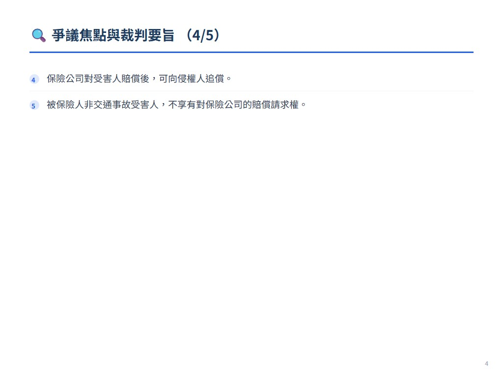
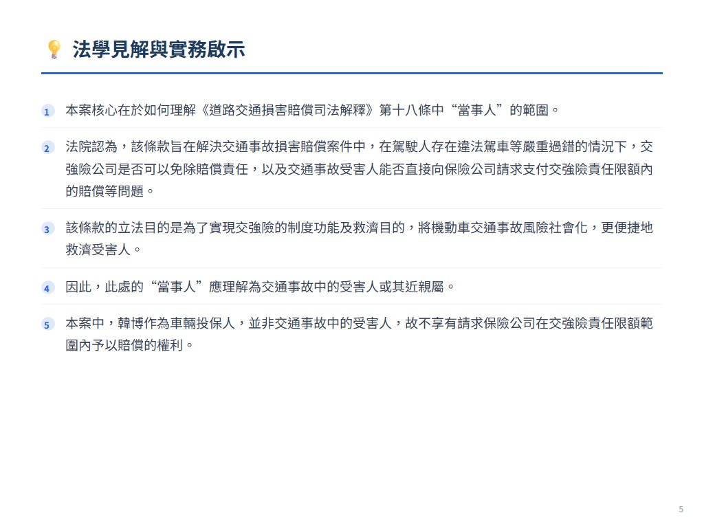

摘要
本案為韓博請求人保龍江公司賠償交強險保險金的保險合同糾紛。爭議點在於駕駛人無證駕駛情況下，被保險人是否有權請求保險公司在交強險責任限額內賠償。黑龍江省高級人民法院再審判決駁回韓博的訴訟請求，認為韓博並非交通事故受害人，不享有賠償請求權。
爭議焦點與裁判要旨
- 爭議焦點：無證駕駛情況下，被保險人是否有權請求交強險賠償？
- 《機動車交通事故責任強制保險條例》規定無證駕駛為保險公司免責事由。
- 《道路交通損害賠償司法解釋》第十八條的“當事人”指交通事故受害人。
- 保險公司對受害人賠償後，可向侵權人追償。
- 被保險人非交通事故受害人，不享有對保險公司的賠償請求權。
法學見解
本案核心在於如何理解《道路交通損害賠償司法解釋》第十八條中“當事人”的範圍。法院認為，該條款旨在解決交通事故損害賠償案件中，在駕駛人存在違法駕車等嚴重過錯的情況下，交強險公司是否可以免除賠償責任，以及交通事故受害人能否直接向保險公司請求支付交強險責任限額內的賠償等問題。該條款的立法目的是為了實現交強險的制度功能及救濟目的，將機動車交通事故風險社會化，更便捷地救濟受害人。因此，此處的“當事人”應理解為交通事故中的受害人或其近親屬。本案中，韓博作為車輛投保人，並非交通事故中的受害人，故不享有請求保險公司在交強險責任限額範圍內予以賠償的權利。法院強調，即使《道路交通損害賠償司法解釋》允許受害人直接向保險公司請求賠償，保險公司在賠償後仍可向侵權人追償，最終責任仍由過錯方承擔。本案判決明確了交強險的保障對象是交通事故的受害人，而非投保人本身，避免了道德風險，也確保了交強險制度的健康運行。
 








展開案例評析
驾驶人违法驾车情况下，被保险人是否有权请求保险公司在
來源：《中國法院2018年度案例》保險糾紛 原始文件：中国法院2018年度案例·保险纠纷.pdf 案號：黑龙江省高级人民法院（2016）黑民再字第229号民事判决书 案由：保险合同纠纷 當事人：韩博诉中国人民财产保险股份有限公司龙江支公司保险合同案
6.驾驶人违法驾车情况下，被保险人是否有权请求保险公司在 机动车交通事故责任强制保险责任限额范围内予以赔偿 ——韩博诉中国人民财产保险股份有限公司龙江支公司保险合同案
【案件基本信息】
1.裁判书字号 黑龙江省高级人民法院（2016）黑民再字第229号民事判决书 2.案由：保险合同纠纷 3.当事人 原告（被上诉人、被申请人）：韩博 被告（上诉人、再审申请人）：中国人民财产保险股份有限公司龙江支 公司（以下简称人保龙江公司）
【基本案情】
韩博自有黑B1××××轿车一台。2013年7月9日7时许，韩博的妻子张颖驾驶该车，沿龙 江县龙兴镇奋勇村内的公路由东向西行驶，当行至奋勇学校门口，超越同方向路边王通停 靠的黑BL××××号校车时，将校车上下来横过道路的小学生柳某某、田某、关某、关某某 撞伤。经交警部门认定，张颖承担事故的主要责任。事发后，几名伤者分别在龙江县人民 医院治疗，其中柳某某花费10620元；关某某花费18482.46元；关某花费11512.96元；田某 花费3873.33元。以上四伤者的全部费用合计44488.75元，经协商，韩博已经赔付给伤者各 项费用合计28000元。另查，韩博的车辆在人保龙江公司处投保了交强险，发生交通事故 时，该车在保险期限内。韩博诉至法院，请求人保龙江公司赔偿以上损失21287.12元，并 承担诉讼费用。人保龙江公司认为，张颖系无证驾驶，根据《机动车交通事故责任强制保 险条例》第二十二条第二款规定，无证驾驶造成受害人财产损失，保险公司不承担赔偿责 任，并且在韩博与人保龙江公司达成的机动车第三者责任强制保险合同条款第九条第一款 第（一）项规定，驾驶人未取得驾驶资格，保险公司不负赔偿责任，据此法律规定和合同 内容，本案中张颖未取得驾驶资格所造成的事故损失，不属于保险公司的理赔范围，因此 保险公司不承担赔偿责任，请求驳回其诉讼请求。
【案件焦点】
驾驶人存在违法驾车等严重过错的情况下，被保险人（非道路交通事故 的受害人）是否有权请求保险公司在机动车交通事故责任强制保险责任限额 范围内予以赔偿？
【法院裁判要旨】
黑龙江省龙江县人民法院经审理认为：韩博与人保龙江公司订立的保险 合同系双方真实意思表示，应为有效合同。韩博在人保龙江公司投保了交强 险，韩博的妻子在使用该车辆期间发生事故，且损失没有超过实际保额，其 实际损失应由人保龙江公司负担。韩博实际赔付给受害方28000元，而韩博起 诉时按21287.12元主张权利，不违反法律规定，予以支持。 黑龙江省龙江县人民法院依据《中华人民共和国合同法》第五条、第四 十条、第一百零七条，《中华人民共和国保险法》第十八条规定，作出如下
判决： 原告韩博的合理损失21287.12元，由被告中国人民财产保险股份有限公司 龙江支公司在本判决生效后五日内给付。 人保龙江公司持原审答辩意见提起上诉。齐齐哈尔市中级人民法院经审 理认为：《最高人民法院关于审理道路交通事故损害赔偿案件适用法律若干 问题的解释》第十八条规定：“有下列情形之一导致第三人人身损害，当事人 请求保险公司在交强险责任限额范围内予以赔偿，人民法院应予支持： （一）驾驶人未取得驾驶资格或者未取得相应驾驶资格的；……保险公司在 赔偿范围内向侵权人主张追偿权的，人民法院应予支持……”根据该规定，本 案保险车辆驾驶人张颖驾驶车辆时，未依法取得驾驶资格，属于无证驾驶， 投保人韩博向人保龙江公司要求赔偿，应予支持，但人保龙江公司在赔偿范 围内可以另行向侵权人行使追偿权。 齐齐哈尔市中级人民法院依照《中华人民共和国民事诉讼法》第一百七 十条第一款第（一）项规定，作出如下判决： 驳回上诉，维持原判。 人保龙江公司持原审答辩意见申请再审。黑龙江省高级人民法院经审理 认为：案涉保险合同，系双方当事人的真实意思表示，未违反法律、行政法 规的强制性规定，亦无导致合同无效的其他情形，依法有效，对当事人双方 均有约束力。本案中，龙江县交通警察大队道路交通事故认定书［龙公交认 字（2014）第109号］认定张颖系无证驾驶。根据《机动车交通事故责任强制 保险条例》第二十二条关于“有下列情形之一的，保险公司在机动车交通事故 责任强制保险责任限额范围内垫付抢救费用，并有权向致害人追偿：（一） 驾驶人未取得驾驶资格或者醉酒的；……有前款所列情形之一，发生道路交 通事故的，造成受害人的财产损失，保险公司不承担赔偿责任”的规定，“驾驶 人未取得驾驶资格”系保险公司不再承担其他交强险责任限额范围内的赔偿责 任的法定免责事由。《机动车交通事故责任强制保险条例》作为行政法规对
韩博和人保龙江公司均产生约束力，被保险人韩博请求人保龙江公司赔偿保 险金无法律依据。 《最高人民法院关于审理道路交通事故损害赔偿案件适用法律若干问题 的解释》（以下简称《道路交通损害赔偿司法解释》）第十八条规定，驾驶 人未取得驾驶资格驾驶车辆发生交通事故，导致第三人人身损害的，当事人 请求保险公司在交强险责任限额范围内予以赔偿，人民法院应予支持，但该 条司法解释同时赋予保险公司在赔偿范围内向侵权人的追偿权，即由交通事 故损害的过错方承担终局赔偿责任。因此，本条司法解释所规定的保险公司 的赔偿责任是指“受害人”对向侵权人请求赔偿或向保险公司请求赔偿具有选择 权，且在受害人已经从侵权人处获得全部赔偿的情况下，其无权再向保险公 司请求赔偿。据此，上述司法解释中的“当事人”是指交通事故中受害的第三人 或其近亲属。本案中韩博不属于该司法解释意义上的“当事人”，对人保龙江公 司不享有赔偿请求权。原审判决依据上述司法解释判令人保龙江公司赔偿保 险金适用法律错误，本院再审予以纠正。 黑龙江省高级人民法院依照《中华人民共和国民事诉讼法》第二百零七 条第一款、第一百七十条第一款第（二）项规定，作出如下判决： 一、撤销齐齐哈尔市中级人民法院（2015）齐商三终字第9号民事判决及 龙江县人民法院（2014）龙江商初字第1122号民事判决； 二、驳回韩博的诉讼请求。
【法官后语】
本案涉及的核心问题是如何理解《道路交通损害赔偿司法解释》第十八条关于请求保 险公司在交强险责任限额范围内予以赔偿的“当事人”的范围，这需要从该条规定的条文主 旨及立法目的进行分析。《道路交通损害赔偿司法解释》第十八条是关于几种违法情形 下，交强险保险公司赔偿责任及追偿权的规定，其立法系意在解决《中华人民共和国道路 交通安全法》颁布实施以来，人民法院在审理交通事故损害赔偿案件中存在的以下几个问 题：一是在驾驶人存在违法驾车等严重过错的情况下，交强险公司是否可以完全或部分免
除赔偿责任；二是交通事故受害人能否直接向承包肇事机动车交强险的保险公司请求支付 交强险责任限额内的赔偿；三是在上述违法情形下，保险公司能否获得追偿权以及追偿权 应当如何行使。该条款制定的理论基础主要是基于交强险的制度功能及救济目的的实现， 即将具有严重损害性的机动车交通事故风险社会化，从而实现更便捷救济受害人的目的。 因此，根据上述对该条款主旨、立法目的以及理论基础的分析，这里的“当事人”，也即损 害赔偿请求权人，应当理解为交通事故中的受害人或其近亲属。此外，根据《道路交通损 害赔偿司法解释》第十七条规定，如果投保人非车上人员，其允许的驾驶人驾驶机动车致 使投保人受损害的，则投保人与其他普通第三人一样，也可以成为交强险赔偿的受害人。 综观本案，韩博作为车辆投保人，并非本案交通事故中的受害人，故其不享有请求保险公 司在交强险责任限额范围内予以赔偿的权利。 编写人：黑龙江省高级人民法院 牛国梁